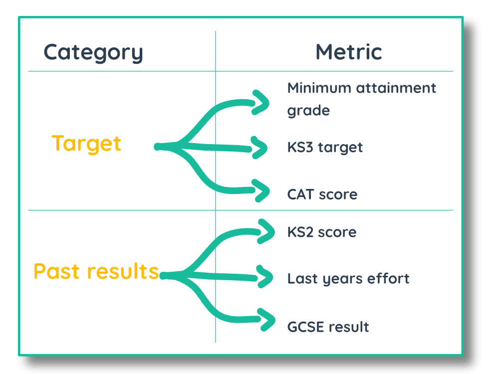

The  blog
blog
Using metrics
Last updated | 30th October 2018
[ADMIN]
Metrics can be any academic data that you might want to use as a reference point for your students. You create metric categories and stores metrics within these categories.
A common metric category is 'Targets' and common metrics within this category are 'Ability Target' and 'Minimum Attainment level'.

Creating metric category
ADMIN OPTIONS [Metrics] > [Metric categories] > 'Create'
To begin with, you need to make a metric category. A common metric category is Targets. Within this category you would create your targets! And begin to assign grades or values to your students based on the target.
Once you have created a metric category it will appear in the sidebar under the metrics title.
Adding metrics
ADMIN OPTIONS [Metrics] > [Metric category] > 'Create'To being creating metrics click on the metric category for which you want to create the metric. Click the create button to fill in the metric details.
Setting up metrics
ADMIN OPTIONS [Metrics] > [Metric category] > 'Create'
First enter the metric name and the description of the metric. You can then choose the metric type, this the option to choose whether the metric uses a grade type, is an integer or a decimal number.
If you select grade, you will be asked to select the grade type you would like to use for the metric. For example, if I were creating an English target grade and I record most of my English assessments using the Attainment grade type, I would select Attainment. By using a grade type that you commonly use to grade assessments, it will be easier to compare a student's performance against their target.
Subject specific or non-specific
You can then select whether the metric is Subject Specific. This means, does the metric relate to individual subjects or do you want to be able apply a different metric value for multiple subjects. For example, if I select Subject Specific and enter English in the subject input box, this metric will only be created for groups with English as a subject.
You could select English and Geography in the subject input box, this would mean you can set this metric for groups with English or Geography as a subject, and they will be two separate metric values. If you select All Subjects you can set the metric with a different metric value for every subject. This can be useful if you have a metric called 'Target grade' or 'Minimum attainment grade' that is applicable to every subject, but will have a different value/grade for each subject.
If we do not select the Subject Specific box, the metric is not subject specific and is ubiquitous across all subjects. If do not select the Subject Specific box and enter metric values for students, these values will appear in all your group markbooks against this student. This might be useful when creating behaviour or effort related metrics.
Permissions
When you create or edit a metric, you can set permissions for users to set that metric. This is designed so that you can control metrics centrally or allow teachers to set them themselves.
Setting metrics
Centrally
ADMIN OPTIONS [Metrics] > [Metric category] > 'Set metrics'
If you have admin permissions, you can set metrics for collections, groups and students through the admin options. Select the metric in the metrics table and clicking the 'Set Metrics' button.
You can then select the collections, groups and students you would like to set the metric for and choose a grade or type a number against each student. Once you are done and click the save button, these metrics will then appear in the metrics section of group pages and the markbook for groups that use those metrics.

By Group
SIDEBAR [Group Type] > [Group] > NAVBAR 'Metrics'
Every user that has groups will see metrics in their navbar. Here they can view metrics for the group they are currently viewing by selecting the metric and subject (where applicable). If they have permissions to set the metric they have selected, the user will be able to set and change these metrics themselves.